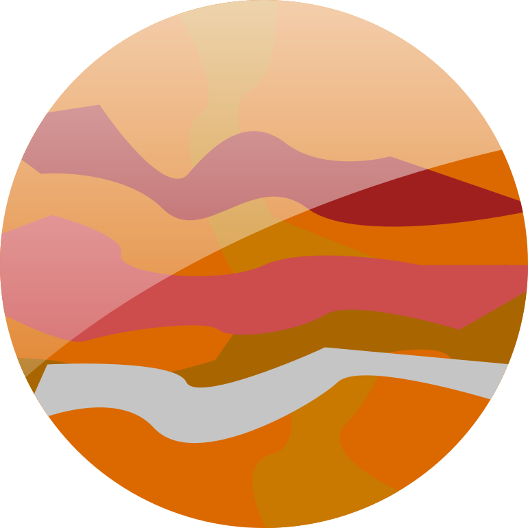
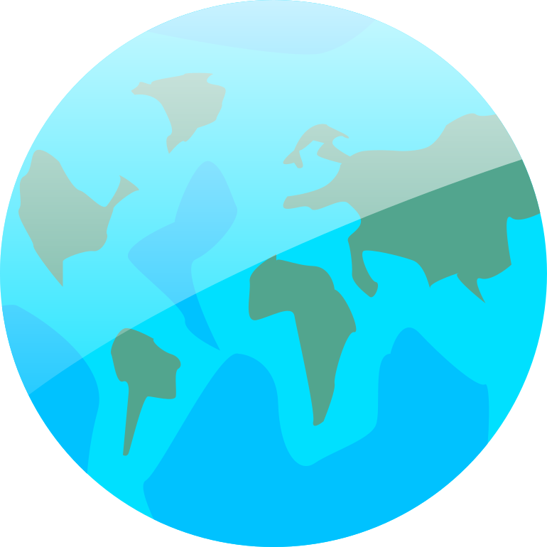
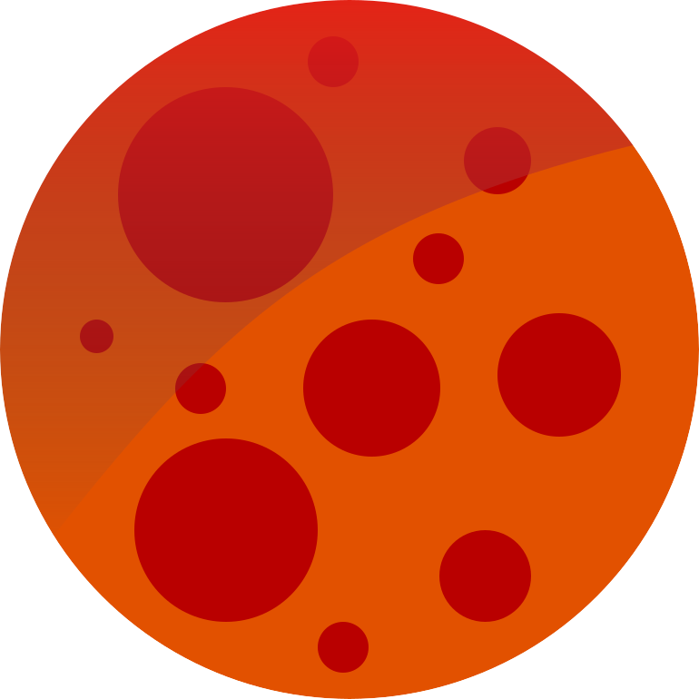
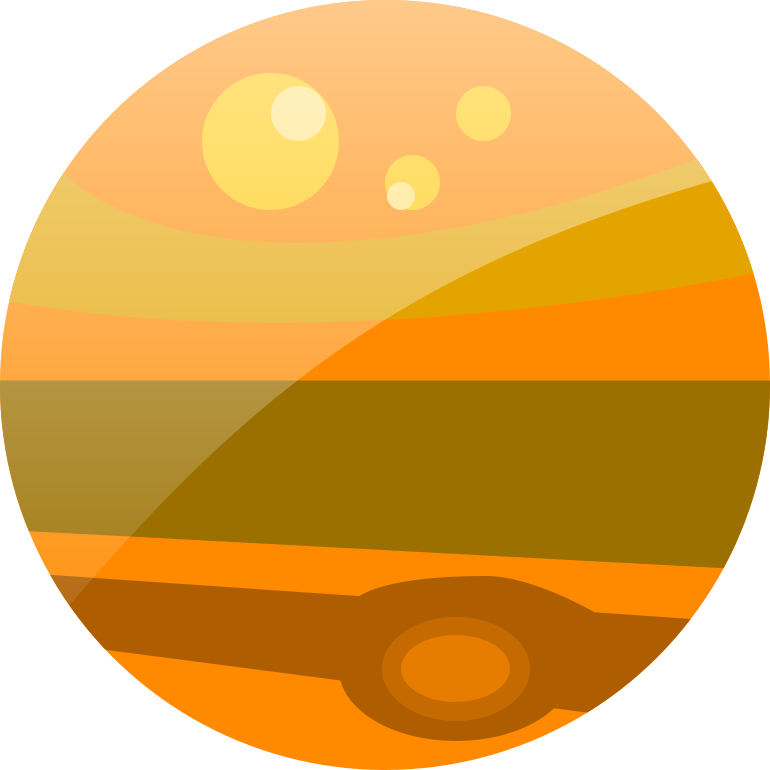

Explore Planets

The Sun
The sun is the biggest object in the solar system. It is a medium size, main sequence star, formed about 4.6 Billion years ago. It produces light and heat for the entire solar system, and is the source of all life on Earth. The sun consists mostly of hydrogen and helium, and traces of heavier elements. The surface temperature is a cool 5500 degrees Celsius, with the core sweltering at around 15 Million degrees C.
Radius
695 700 km
Mass
1.99 * 1030 kg
Distance
0 km
Rotation Period
Undefined

Mercury
Mercury is the closest planet to the sun. It is named after Mercury, the messenger of the Roman gods. Mercury is tidally locked, meaning the same side is always facing the sun. On the scorching day-side the temperature soars to 427 degrees Celcius, while the night-side holds a crushingly cold -193 degrees Celcius.
Radius
2440 km
Mass
3.3 * 1023 kg
Distance
57.9 Million km
Rotation Period
88 Days

Venus
Venus is often referred to as a sister-planet to Earth, given they are roughly the same size, however that is basically where the similarities stop. Venus' surface is rocky, with volcanoes dominating the landscape. The surface temperature is a torrential 464 degrees C thanks to runaway greenhouse effects from its dense atmosphere of mainly CO2. It is named after the Roman goddess of love and beauty.
Radius
6052 km
Mass
4.87 * 1024 kg
Distance
108 Million km
Rotation Period
243 days

Earth
The Earth is the planet we all know as our home in the universe. It is located at the perfect distance from the sun meaning we have liquid water, and a temperature suitable for life. The liquid iron core gives it a magnetic field that protects us from dangerous radiation from the sun.
Radius
6371 km
Mass
5.974 * 1024 km
Distance
150 Million km
Rotation Period
365 days

Moon
The moon is our closest neighbour, orbiting a few hundred thousand km away. It formed in the aftermath of a collision between Earth and another Mars-sized object shortly after the Earth formed. Due to its relatively large mass and close proximity, it is responsible for the tides we experience on Earth, as well as a lot of awe, fear and confusion throughout history.
Radius
1738 km
Mass
7.35 * 1022 kg
Distance
384 000 km
Rotation Period
29.5 days

Mars
Mars is the planet immediately outside Earth, and has been a source of a lot of facination as we started leaning more about our place in the universe. It was the site of the first successful spacecraft to land on another planet when Viking 1 landed in 1976. To this day it remains the target for the first human interplanetary mission.
Radius
3390 km
Mass
0.64 * 1024 kg
Distance
228 Million km
Rotation Period
687 days

Jupiter
Jupiter is the biggest planet in the solar system, and it's also the first of the gas-giants, consisting mostly of hydrogen. Storms rage across the surface, some of them 3 times as big as the Earth. It's large mass may in part have contributed to life on Earth by deflecting asteroids and other foreign bodies to avoid hitting Earth. Jupiter was also the first planet to be discovered to have moons, by Galileo in the 1600s.
Radius
71500 km
Mass
1900 * 1024 kg
Distance
778 Million km
Rotation Period
11.9 Years

Saturn
Saturn is famous for its rings, which consists of debris from moons that once came too close and was ripped apart by the extreme tidal forces. Like Jupiter, it's another gas giant, and it its large mass also gives it plenty of moons in orbit. One of which, Titan, is known to have clouds and weather systems of methane.
Radius
60300 km
Mass
568 * 1024 kg
Distance
1429 Million km
Rotation Period
29.5 Years
Uranus
Uranus is the first of the outermost planets that were discovered in modern times, being found by William Herschel in 1781. It consists mostly of gas, but due to the crushingly cold temperature it also contains a lot of frozen materials, often being dubbed an ice-giant. It's also noteworthy for lying on its side relative to its orbit around the sun.
Radius
25600 km
Mass
87 * 1024 kg
Distance
2871 Million km
Rotation Period
84 years

Neptune
Neptune is the 2nd ice-giant along with Uranus, and it was discovered through mathematical calculations and then confirmed in 1846 by three different astronomers. Along with Uranus, Neptune has only been visited by one spacecraft, Voyager 2 in 1989. Neptune's largest moon Triton is noteworthy, featuring volcanoes spewing out ice and snow.
Radius
24800 km
Mass
103 * 1024 kg
Distance
4504 Million km
Rotation Period
165 Years
Pluto
Pluto isn't technically a planet, after being demoted in 2006 following a clarification of the definition of a planet after discoveries of several similarly sized bodies in the Asteroid and Kuiper belt. It's a tiny, rocky and icy dwarf far out in a highly elliptical orbit which sees it somtimes cross the path of Neptune. It's so far away that it took until 1930 before it was discovered by Clyde Tombaugh and 2015 before we could get proper images of it when New Horizons passed by.
Radius
1188 km
Mass
1.3 * 1022 kg
Distance
5914 Million km
Rotation Period
248 Years